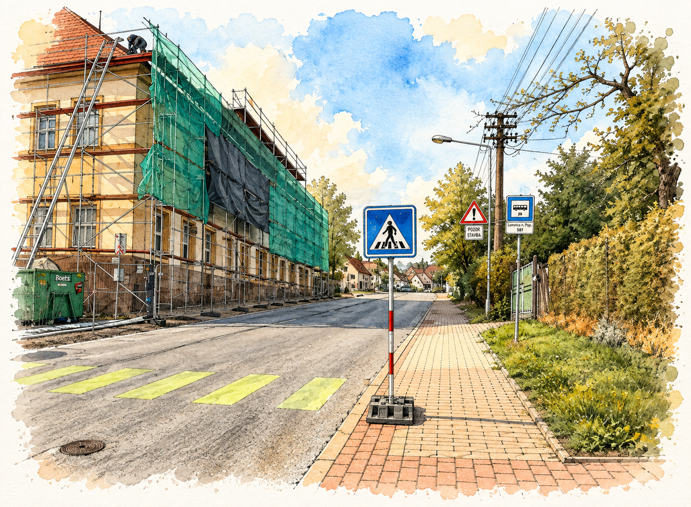
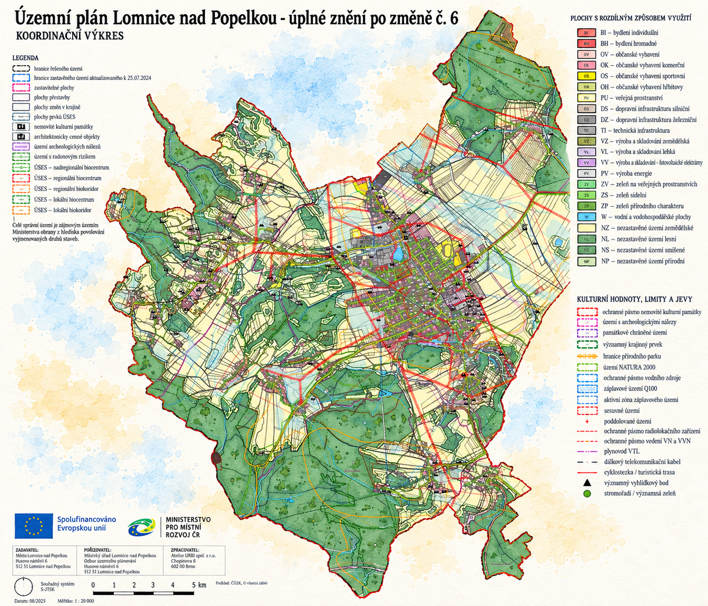
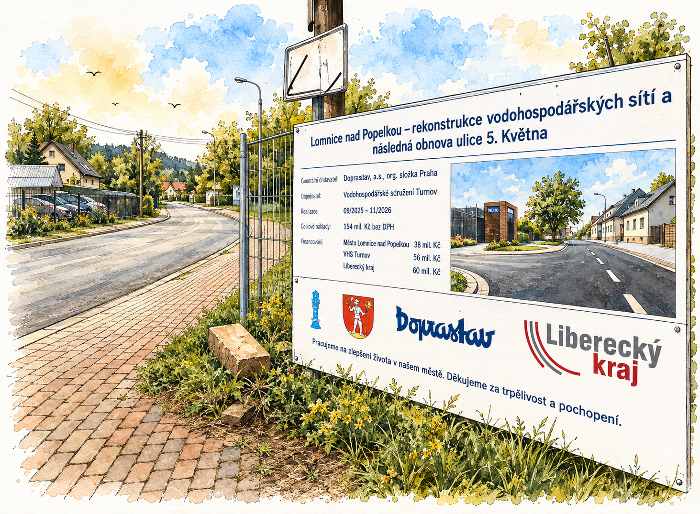
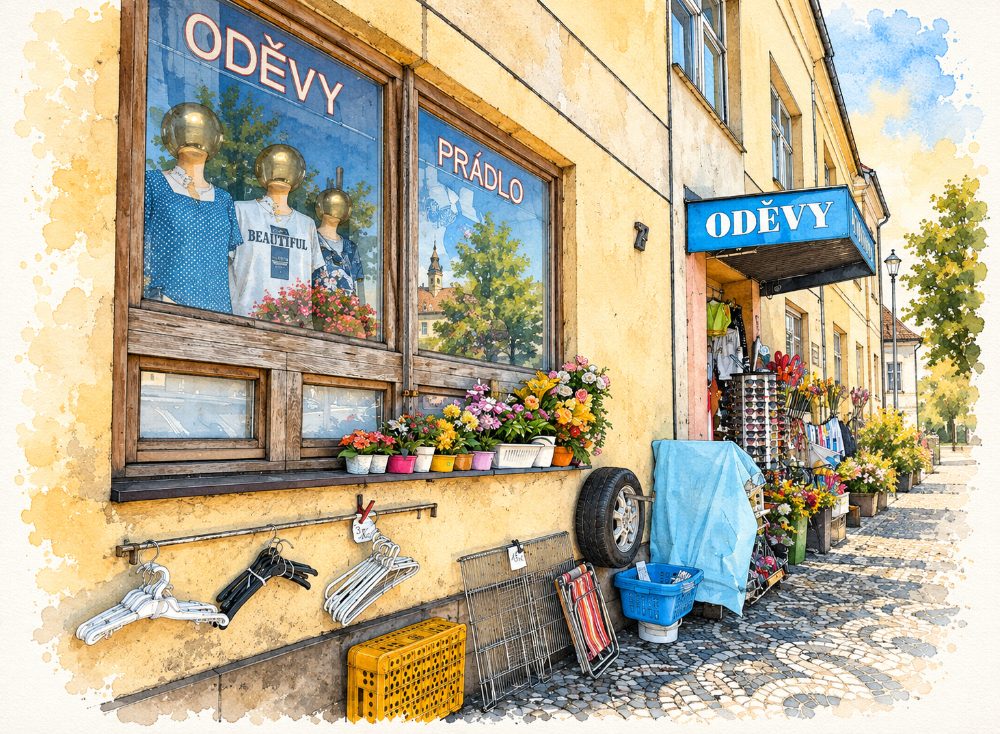
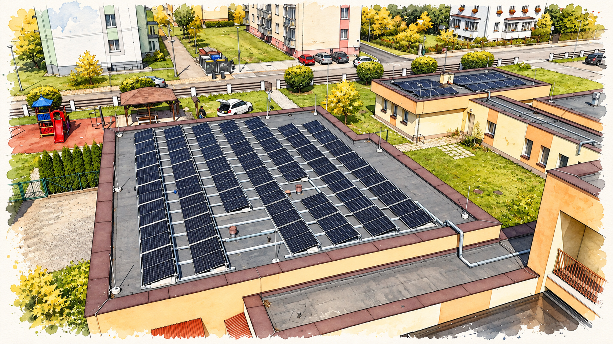
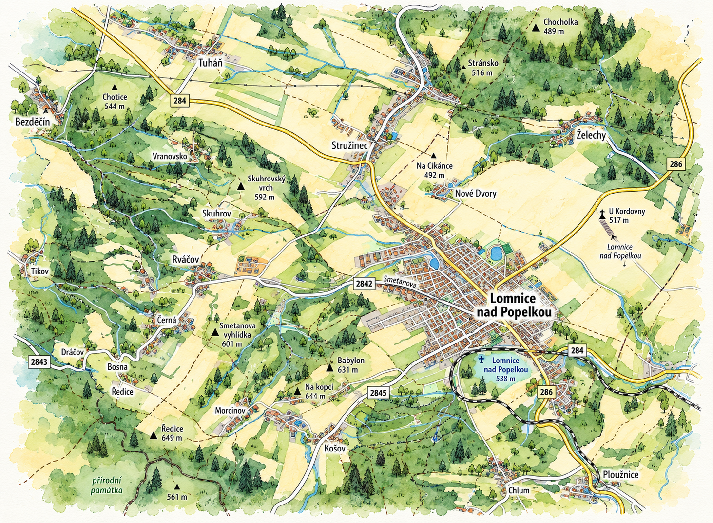
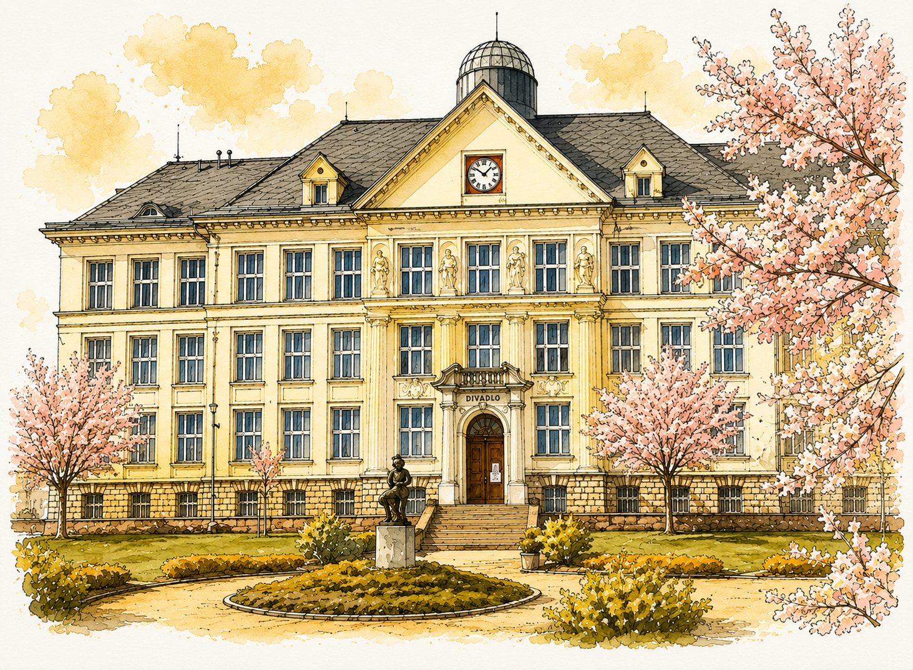
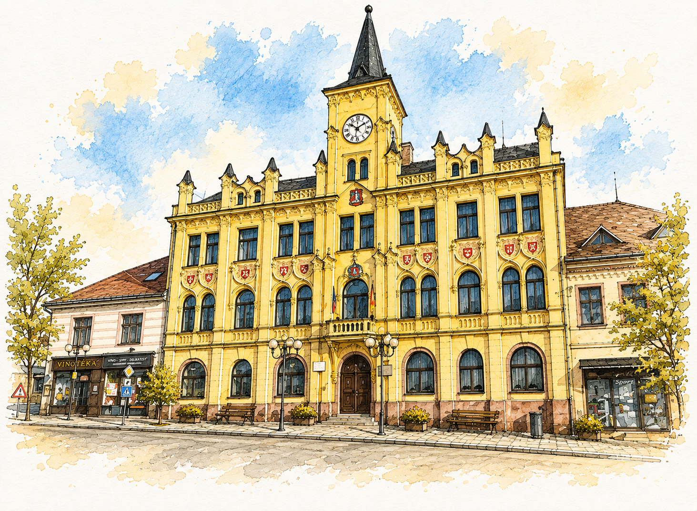

01

01 / Pohyb po městě
Bezpečně
pěšky městem.
Bezpečné přechody, chodníky a cesty, po kterých se člověk nemusí bát pustit dítě samotné.
Z:LOMNICE / VIZE PRO BUDOUCNOST
Jsme skupina lidí, kterým záleží na budoucnosti Lomnice. Přicházíme s novou energií, konkrétními nápady a chutí město posouvat dál. Chceme město, kde se bude dobře žít všem generacím.
↓ SCROLLUJTE DOLŮOsm oblastí, které chceme v Lomnici posouvat dopředu.

01 / Pohyb po městě
Bezpečné přechody, chodníky a cesty, po kterých se člověk nemusí bát pustit dítě samotné.

02 / Rozvoj
Chceme Lomnici, která se rozvíjí promyšleně a nabízí prostor pro mladé rodiny, seniory i nové obyvatele.

03 / Doprava
Investice do dopravy musí navazovat, dávat smysl a mít jasně vysvětlené priority.

04 / Veřejný prostor
Náměstí, parky, hřiště i menší místa v ulicích mají sloužit lidem, ne jen průjezdu aut.

05 / Energie
Chceme využívat energii efektivněji, snižovat provozní náklady města a připravovat se na budoucnost.

06 / Celá Lomnice
Rváčov, Dráčov, Černá, Skuhrov i další části Lomnice si zaslouží stejnou pozornost a kvalitní údržbu.

07 / Vzdělávání
Školy mají být moderním a bezpečným místem, které připravuje děti na svět, který teprve přijde.

08 / Radnice
Rozhodování města má být srozumitelné, dohledatelné a otevřené lidem, kterých se týká.


Aktuality
Místo pro novinky, setkání, výsledky práce a informace z dění ve městě.
ČÍST AKTUALITY →
12 / Kontakt
Chcete něco změnit, máte otázku nebo se chcete zapojit? Napište nám.
NAPIŠTE NÁM ↗